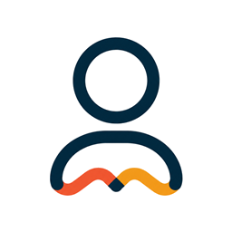
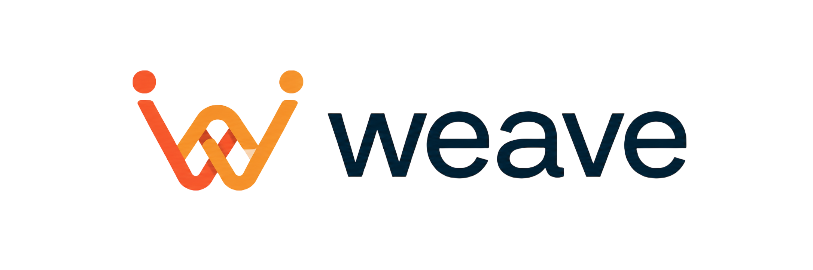
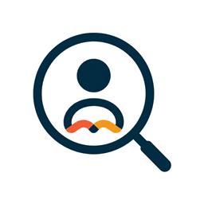
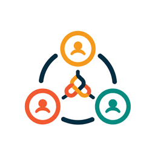
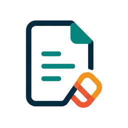
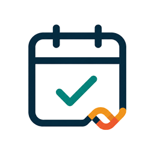

Profile
Ground outreach in real projects, goals, and proof.

Cold outreach, warmer connectionsThe access problem
The right conversation can change your trajectory, but most people do not know who to contact, what to say, or how to follow up.
Weave turns outreach anxiety into a concrete next step.
Big idea
Weave starts with job search, but the larger product is useful connections: referrals, mentors, collaborators, customers, advisors, and hidden opportunities.
Cold outreach increases the surface area of luck.Solution
Research the context. Find relevant people. Understand why they matter. Draft a credible message. Follow through.

Ground outreach in real projects, goals, and proof.

Start with a target company and relationship intent.

Explain why the connection is worth attempting.

Write a specific, low-pressure message.

Keep useful conversations alive after silence.
Product proof
Hi Priya, I am Alex, a software engineering student building tools around queueing and campus workflows. Your work near WestJet Digital stood out because I am trying to understand how product teams improve real operational systems.
These are designed mini product states; replace with real screenshots after capture if desired.
Technical quality and vision
React/Vite frontend and Express/TypeScript backend.
Shared TypeScript contracts across web and server.
AI research, finder reasoning, chat coaching, and skill-based prompts.
Cached/seeded demo paths for reliable judging.
Make useful connections less accidental.